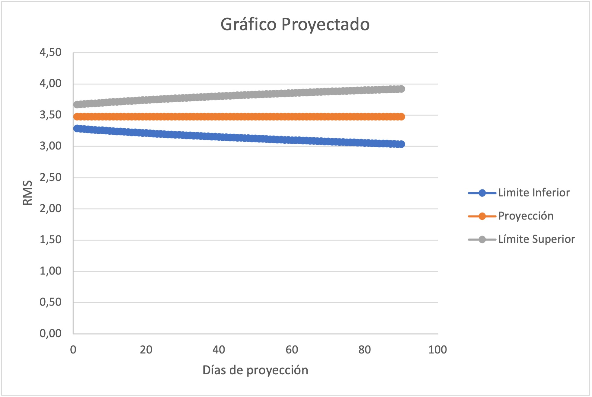

Este proyecto trata sobre el funcionamiento de un motor y su amplitud de vibración medidas en RMS. Este último es de vital importancia para supervisar y
diagnosticar algún fallo mecánico en máquinas rotativas, a mayor vibración mayor es la posibilidad de falla.
A través de un análisis en el historial de comportamiento de las vibraciones se realizan herramientas de predicción y análisis para entender el funcionamiento
de la maquinaria cómo veremos a continuación:
Se puede apreciar que todos los datos analizados están en un rando de 2,5 y 3,5 rms indicando estabilidad, pero durante el último tiempo comienza a tener un comportamiento
distinto, por lo cual se hace necesario un estudio, el cual nos entrega la siguiente información:

El estudio entrega una proyección con un promedio hacia los 3,5 rms y con tendrencia creciente a aumentar su amplitud lo que puede ser consecuencia de patrones de daño .
También nos indica que la probabilidad a los 90 días aproximadamente es muy probable que la vibración llegue a los 4 rms por lo que se recomienda realizar una mantención oportuna y
de esta manera estabilizar la medición de RMS asemejandose o estando por debajo de los datos medidos en un inicio.